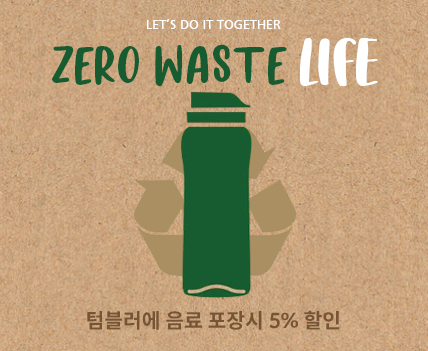

Good in more than just taste
우리는 건강한 재료를 사용합니다.
동물성 지방을 배재한 100% 콩으로 만든 크림소스와
대체육으로 만든 고기를 제공하여 맛은 물론 음식의 건강함을 추구합니다.
우리는 건강한 재료를 사용합니다.
동물성 지방을 배재한 100% 콩으로 만든 크림소스와
대체육으로 만든 고기를 제공하여 맛은 물론 음식의 건강함을 추구합니다.
[ 6월 이벤트 ]
텀블러 이벤트
매일 쌓여가는 일회용 플라스틱!
저희 레스토랑에서는 환경 보호를 위해
음료 포장시, 개인 텀블러에 정성껏 담아 드리고,
텀블러를 사용하시면 음료의 5% 할인을
제공해드립니다.
2022. 6. 1 - 6. 31
[ 7월 이벤트 ]
플친 이벤트
카카오톡 플러스 친구 추가시,
5,000원 할인(테이블당 1회 한)
카카오톡 검색창에 그린밸런스 검색 후
친구추가 클릭, 친구추가 완료 화면을 캡쳐해서
결제시 직원에게 제시해주시면 됩니다.
2022. 7. 2 - 7. 30
[ 8월 이벤트 ]
인스타 이벤트
그린밸런스에서 식사하시고,
인스타그램에 포토후기를 남기면
스타벅스 기프티콘 증정!
2022. 7. 1 - 8. 28